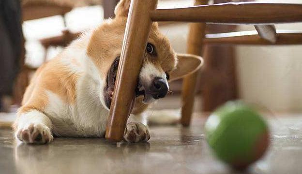

The Doberman Pinscher is a fierce breed of dog. It is used mainly in military and police work. After being trained, it can become a search dog, hunting dog and sheepdog. The Doberman Pinscher is lively, alert, firm, alert, brave and submissive. The Doberman Pinscher, on the other hand, is bold, determined, biting, and aggressive. These characteristics make it all the makings of a good police dog.
The Doberman Pinscher is a fierce breed of dog. It is used mainly in military and police work. After being trained, it can become a search dog, hunting dog and sheepdog. The Doberman Pinscher is lively, alert, firm, alert, brave and submissive. The Doberman Pinscher, on the other hand, is bold, determined, biting, and aggressive. These characteristics make it all the makings of a good police dog.
The Shiba Inu is the oldest dog of medium size. Shiba inu can cope with steep hills and mountain slopes, with sensitive senses, making shiba inu frequently become a good hunting dog. Shiba Inu is lively and active. They play with their favorite toys all day long. It has a strong external vigilance, for the head of the household care home. It is especially for the large similar, and do not concede defeat.
A golden retriever is usually a golden retriever. The Golden Retriever is a single Retriever and is one of the more popular breeds. Bred in the hunting of wild birds, the dog can swim for a long time. The golden Retriever is one of the most common domestic dogs. It is easy to raise, patient and does not require much from its owner, as long as it is regularly exercised, fed and checked by a veterinarian.
A corgi is generally a Welsh corgi. The Welsh Corgi Pembroke is a small dog, courageous and alert enough to guard its home with extreme vigilance, making it one of the most popular small guard dogs.
